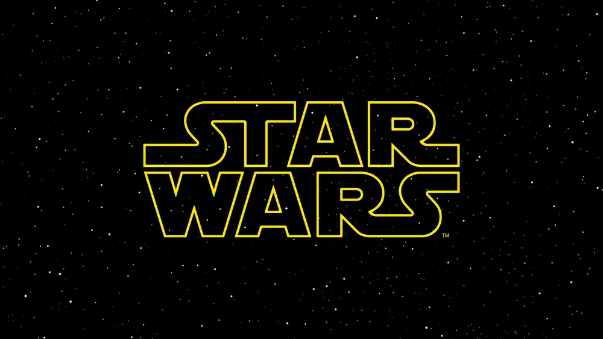
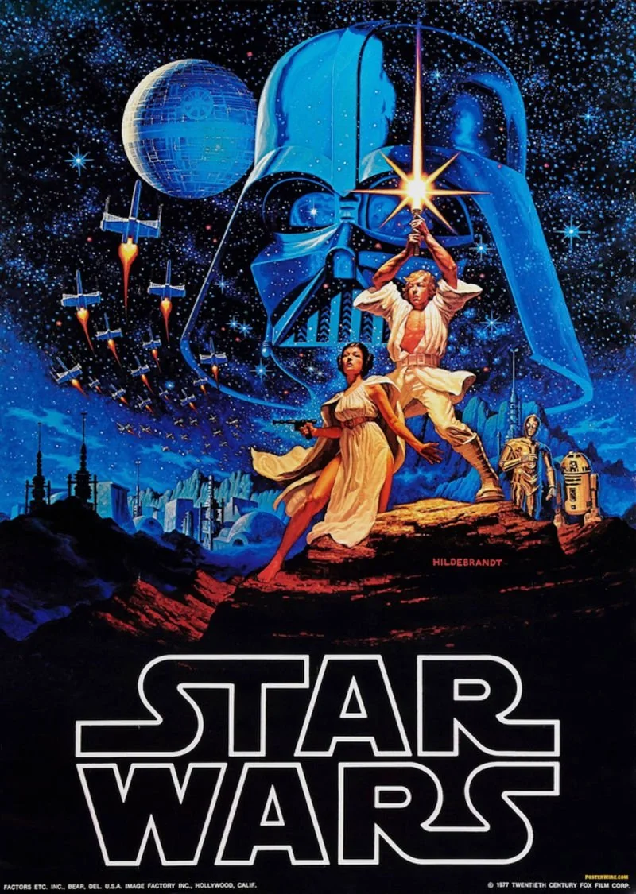

Star Wars is a Sci-Fi Fantasy world created by George Lucas, with the first movie to be released on May 25th, 1977. Star Wars takes place a long, long time ago in a galaxy far, far away. There are many different story lines and shows, movies, and even games that all take place within the Star Wars universe. Every character has a different story to be told waiting to be explored. The following movies that will be discussed are:
Going back to the first movie, Star Was: A New Hope, starts off with a massive ship firing upon space cruiser. We then go inside the ship where we are met with our first characters, C-3PO and R2-D2, both who are droids. We then cut to troopers within the cruiser all taking positions at a door within the ship, the cruiser has just been captured. The door blasts open and blaster bolts start firing from both sides. Through the smoke, white armored troopers, Storm Troopers, emerge from the smoke.